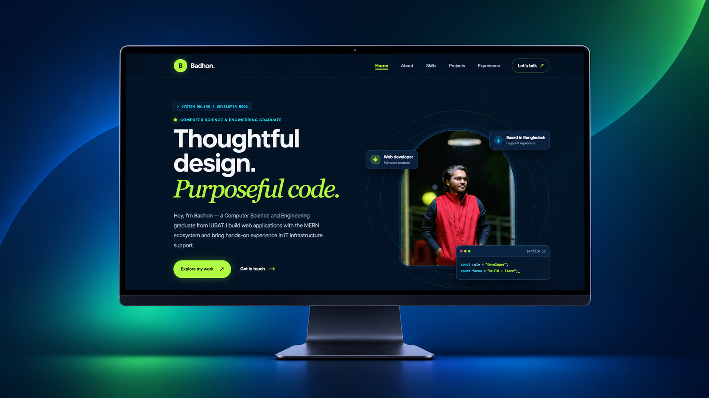
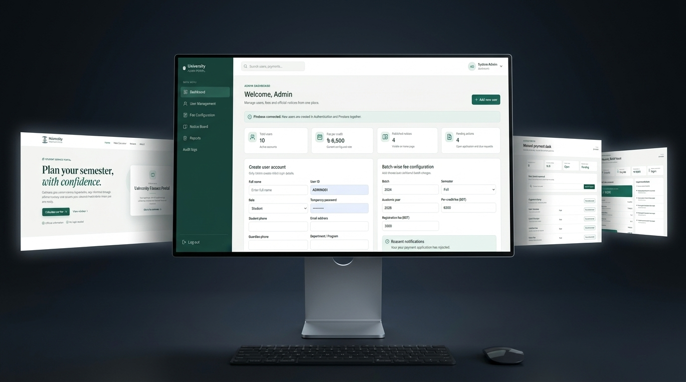
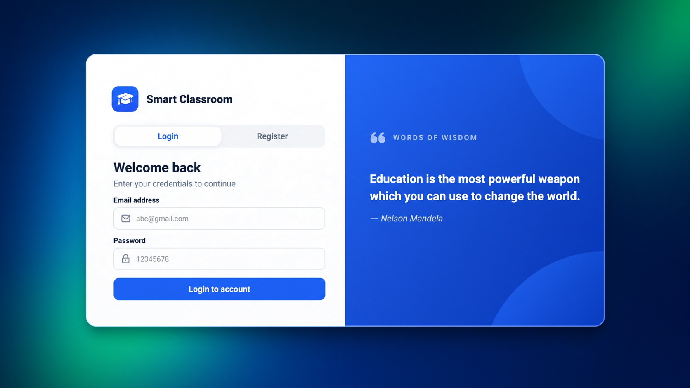
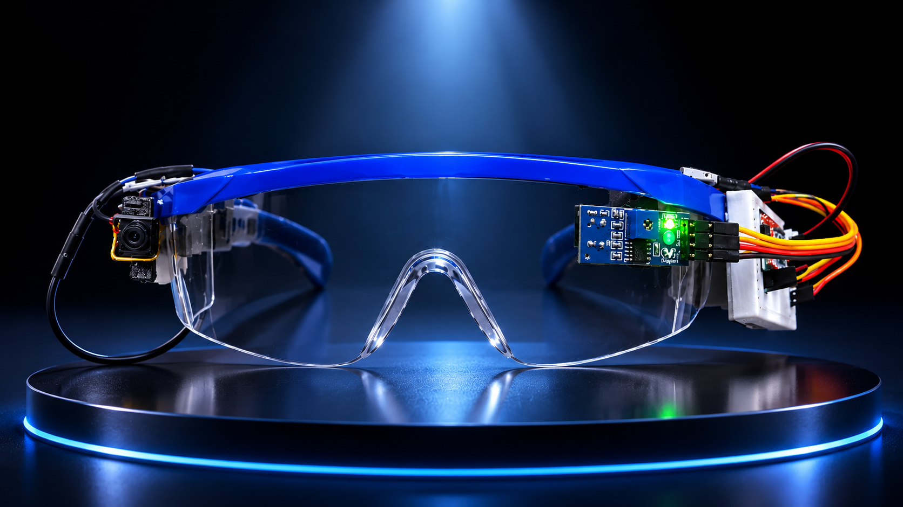

01 / PERSONAL01
Portfolio Website
Built a responsive personal website to present my background, projects, and skills. The CV highlights the user interface, responsive layout, and EmailJS contact integration.
HTMLCSSJavaScriptEmailJS
PROJECT TYPEPersonal portfolio · Frontend development

02 / ACADEMIC PRACTICUM02
University Student Fee & Payment Platform
A role-based platform for Students, Accounts, Registration, and Admin. It supports fee and dues management, scholarships, registration, receipts, and online or offline payment workflows.
React.jsViteTailwind CSSFirebaseFirestoreStripe
MY CONTRIBUTIONImplemented role-based access, payment workflows, and transaction updates.

03 / ACADEMIC PROJECT03
Smart Classroom System
Developed an online exam platform with answer-matching logic for automated grading. The system helps reduce teachers’ manual evaluation effort.
HTMLCSSJavaScriptFirebase
PROJECT TYPEOnline examination and automatic assessment

04 / HARDWARE PROJECT04
Driver Drowsiness Detection Smart Glasses
Developed a smart-glasses prototype that monitors eye closure using sensors and a microcontroller. Prolonged eye closure triggers an alarm, providing an early alert to the driver.
Embedded systemsMicrocontrollerSensorsReal-time alert
PROJECT TYPEHardware prototype for driver safety